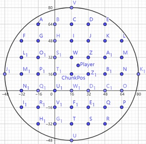

世界类型
命令模拟器并不会依照柏林噪声生成一个和Minecraft一模一样的世界，使用柏林噪声生成的时间消耗过大。
为了加快世界生成的速度，命令模拟器使用了预设的区块模板。
在基岩版下，如果你选择flat世界类型，主世界维度的每个区块按以下模板顺序生成：1层基岩(y=-64)、2层泥土、1层草方块、380层空气
如果你选择infinity世界类型，主世界维度的每个区块按以下模板顺序生成：1层基岩(y=-64)、8层石头(可能有中空区域)、2层泥土、1层草方块，372层空气
下界维度的每个区块按以下模板顺序生成：1层基岩(y=0)、8层地狱岩、118层空气、1层基岩
末地维度的每个区块按以下模板顺序生成：一层空气(y=0)、8层末地石、119层空气
加载区块
命令模拟器在进入世界时会在世界原点附近生成5个玩家，每个玩家都以玩家所在的区块为中心，以模拟距离为半径，
将这个圆形区域所覆盖的区块全部设置为加载区块。

例如图中的Player所在的区块为ChunkPos，模拟距离为4。则该圆形区域以ChunkPos为起点，半径为4个区块，
包含的区块A到Z1都会被标记为加载区块。你可以观察这张图并总结更大的模拟距离会影响多少范围的区块。tickingarea的circle模式同理。
超出加载区块的位置会影响clone、setblock等方块处理命令。
并且在命令模拟器中，超出加载区块的实体在下一个游戏刻将不会被读取和搜索。
游戏刻
命令模拟器的生成的世界将按照顺序执行执行以下事件：
①更新需要加载的区块
②更新实体的相关数据
③运行终端中被发送的命令(命令的执行者是某个玩家，执行位置是玩家的位置)
④运行预设的延时和循环命令(命令的执行者是服务器，执行位置是世界原点)
⑤运行命令方块(命令的执行者是命令方块，执行位置是命令方块的中心)
⑥运行预设的延时和循环函数(命令的执行者是服务器，执行位置是世界原点)
由于命令模拟器还在开发初期，很多Minecraft的特性需要根据玩家的反馈进行更新，
所以现在为止世界中所有的实体都是静止的，不会更新运动状态，许多条件需要用户在命令栏中自行创造调试。